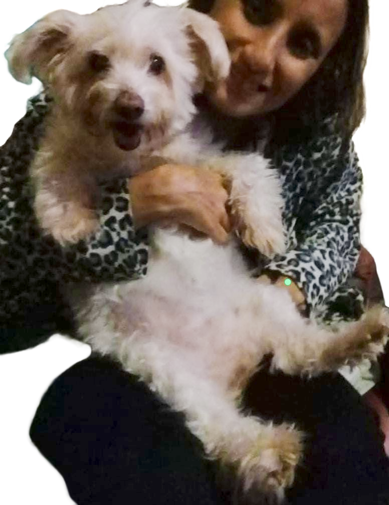

I am a passionate and dedicated English teacher with a strong background in psychology and education. I am committed to fostering a love for learning and helping students reach their full potential.

I love animals of all kinds, but I have a special fondness for dogs. This is my best friend, Fluffy. I enjoy spending time with her and taking her for walks in the park.
Apart from that, I love reading mystery stories, learning new things, and listening to true crime podcasts.